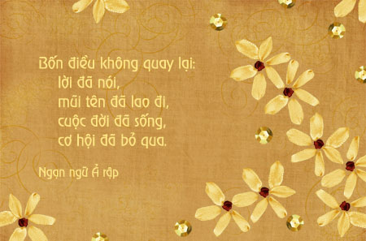

CỬA CHÍNH TÂM HỒN
Nếu ai cũng từng nghe nhắc đến cái gọi là cửa sổ tâm hồn thì chắc rằng họ cũng biết cái cửa sổ ấy chính là đôi mắt của một người. Và một ngôi nhà thì ngoài cửa sổ còn phải có cửa chính chứ, thế có ai biết cửa chính là gì không?
Bạn nghĩ thử xem cửa chính là ở đâu? Đúng vậy cửa chính phải lớn hơn cửa sổ chứ, và một ngôi nhà thì đương nhiên chỉ có một cửa chính thôi, đó chính là cái miệng của mỗi người chúng ta đấy.
Tuy vậy, người ta thường chỉ lo lắng cho cửa sổ nhà mình thôi còn cửa chính hầu như rất ít người chăm chút cho nó, nghe lại là một điều gì đó khá ngược nhỉ! Cơ mà thực tế thì đúng vậy đấy.
;Umh, nói sao nhỉ! Lấy ngôi nhà thực tế của bạn ra làm một minh chứng thì khi nó bị bẩn vì bụi bặm, bạn sẽ làm gì? Tất nhiên phải lấy khăn cùng với nước lau cửa để tạo lại vẻ sạch sẽ cho nó đúng không nào, về hình thức nó cũng như cánh cửa tâm hồn ta vậy, ta cũng phải vệ sinh sạch sẽ cho nó mỗi ngày thế thì nó mới sáng đẹp được.
Nói về vệ sinh cho cửa chính tâm hồn ta về nghĩa đen thì cũng như mọi người đã biết cách rồi nhỉ! ^_- (Đánh răng, súc miệng,….. là cách vệ sinh theo nghĩa đen đấy, có thể tô thêm màu sắc với những người con gái) Thế nhưng không chỉ có vậy. Để cái cửa này sáng đẹp và thơm tho thì còn cần mọi người phải biết chăm chút cho nó những điều khác nữa.
Ý tôi muốn nói ở đây chính là lời nói, ngôn ngữ,… nói chung là âm thanh phát ra từ miệng mỗi chúng ta. Cần phải làm cho lời nói của ta sao cho thật sạch sẽ và thơm tho mang cho người đối diện chúng ta cảm giác dễ chịu, cảm nhận được những tốt đẹp từ người chúng ta. Và sạch sẽ cùng với thơm tho thì làm sao đạt được.
Nói về sạch sẽ trong lời nói của chúng ta tức là trong lời nói của mỗi người phải là những ngôn từ trong sáng, những ngôn từ tốt đẹp chứ không phải những câu tục tiểu, những lời nói đen tối,…. mà đại bộ phận người chúng ta đang sử dụng. Những lời nói thô tục, tục tiểu, xằng bậy,… có bao giờ đem đến cảm giác cho người nghe không? Chắc chắn chẳng ai thích nghe những câu nói như thế cả. Thế mà tại sao mọi người ngày nay lại sử dụng chúng nhiều đến mức 6/10 ngôn từ trong một câu nói của một người là những từ ngữ không trong sạch như thế. Rồi thì những ngôn ngữ trong sáng, những từ ngữ hoa mĩ lại bị lãng quên hoặc biến thể thành những ngôn từ với nghĩa đen tối. Chẳng hiểu nữa!
Và thơm tho ở đây không hẳn cứ dùng dầu thơm xịt vào và thốt ra những hơi thơm tho thì nó là thơm tho. Chưa đúng, hơi thở thơm đến mức nào mà lời nói, hàm nghĩa như một bát cơm thiêu thì nó cũng rất ư là khó nghe. Vậy chính xác thơm tho chính là hương thơm phát ra từ lời nói chính xác hơn nữa là từ cách ta dùng từ ngữ và từ ngữ cũng như hàm nghĩa ta mang đến biến thể thành một hương thơm dễ chịu cho người đối diện. Để làm được điều này là một sự khó khăn cùng với một quá trình luyện tập mới có thể nhuần nhuyễn làm được. Tuy nhiên nó xứng đáng với quá trình luyện tập cực nhọc, khó khăn đó. Bạn, như thế nào khi cảm nhận được một hương thơm ngây ngất từ một người nào đó, đầu tiên chắc chắn bạn sẽ chú ý và có thể bạn sẽ tìm hiểu về người đó hoặc muốn làm quen và nhiều hơn nữa. Đừng nghĩ rằng chỉ có hương thơm cơ thể mới lôi cuốn người khác, sức mạnh ngôn từ, hương thơm của nó còn mạnh hơn nhiều lần nữa đấy. Đó là bí quyết cho những bản hợp đồng thành công, là bí quyết cho những bài diễn văn xuất sắc, là chìa khóa mở ra những ổ khóa lớn trong cuộc sống,….
Bạn có muốn mình là một người thành công không? Bạn có muốn mình đạt được những giấc mơ trong cuộc sống không? Bạn có muốn được cái nhìn yêu thương trong mọi người không? Bạn có muốn ai đó quý mến bạn không?….. Nếu câu trả lời là “Có” thì bạn cần phải biết cách làm cho lời nói của mình, cửa chính nhà mình thật sạch sẽ và thơm tho đã.
Không hẳn như cánh cửa của nhà bạn chỉ cần lau chùi thường xuyên là sạch sẽ mà đối với cánh cửa đặc biệt này lau chùi thường xuyên kèm theo đó là một quá trình rèn luyện mới có thể coi là sạch sẽ được và khi đó bạn cũng đã gần tiến tới thành công của mình trong cuộc sống rồi đấy, và nếu còn biến lời nói của mình thêm thơm tho như tôi đã nói nữa thì chắc chắn trong cuộc sống này khó có nhiều điều khiến bạn gặp khó khăn đấy. Ông ba ta có khuyên rằng: “Lời nói chẳng mất tiền mua, lựa lời mà nói cho vừa lòng nhau” tại sao chúng ta lại không thực hiện chứ? Đừng bào chữa rằng tôi không thể, trừ khi bạn không muốn, chỉ cần có quyết tâm, ý chí và một phương pháp luyện tập thôi.
;Và phương pháp ấy chính là:
- Đọc nhiều. Nghe tuy không liên quan nhưng chỉ có đọc nhiều, biết nhiều mới có thể có được kho tàng ngôn từ của thế giới, và cái kho tàng ấy chính là cái bạn cần có đầu tiên để tiến tới bước tiếp theo đấy.
- Nghe và nhìn nhiều. Nghe nhiều để biết cách người ta nói như thế nào, người này nói ra sao? Người kia nói ra sao? Nhìn dáng vẻ cách thức, ngôn từ họ sử dụng là gì?…..
- Nói ít. Đúng vậy, nói ít lại, hãy làm cho lời nói của bạn có giá trị, tuy ít nhưng khi nào nói ra mỗi câu mỗi từ đều có giá trị cả. Mỗi lần muốn nói đến một điều gì đó, hãy suy nghĩ kỹ lưỡng:
- Tại sao mình nói vậy?
- Mình đang nói với ai?
- Có cần nói ra không?
- Lợi hại khi nói?
- Mình nên dùng từ ngữ như thế nào?
- Mình phải diễn đạt như thế nào?
Sau khi đã nghĩ kỹ rồi và vẫn quyết định nói thì hãy nói. Lúc nào cũng vậy cứ phải suy nghĩ cái đã rồi hãy nói. Điều này chẳng phải ai cũng có thể làm được, tuy vậy nếu bạn đã luyện tập và thành thục nó như ăn cơm bữa thì bạn đã thành công rất nhiều rồi đấy, bạn sẽ thấy quá trình luyện tập ấy sẽ được đền đáp xứng đáng. Bất cứ thứ gì cũng đều có cái giá và cái thành phẩm của nó cả.
Túm lại. Hãy biết chăm chút cho cánh cửa chính tâm hồn của bạn nhá!! Ngôi nhà muốn đẹp cửa sổ đẹp là điều đương nhiên, tuy nhiên nếu nhà muốn đẹp cùng với giàu và ấn tượng với người khác thì cửa chính của bạn phải là thứ cần chăm chút nhiều hơn.
;-- Chúc bạn có một cửa chính thật sạch đẹp và thơm tho --